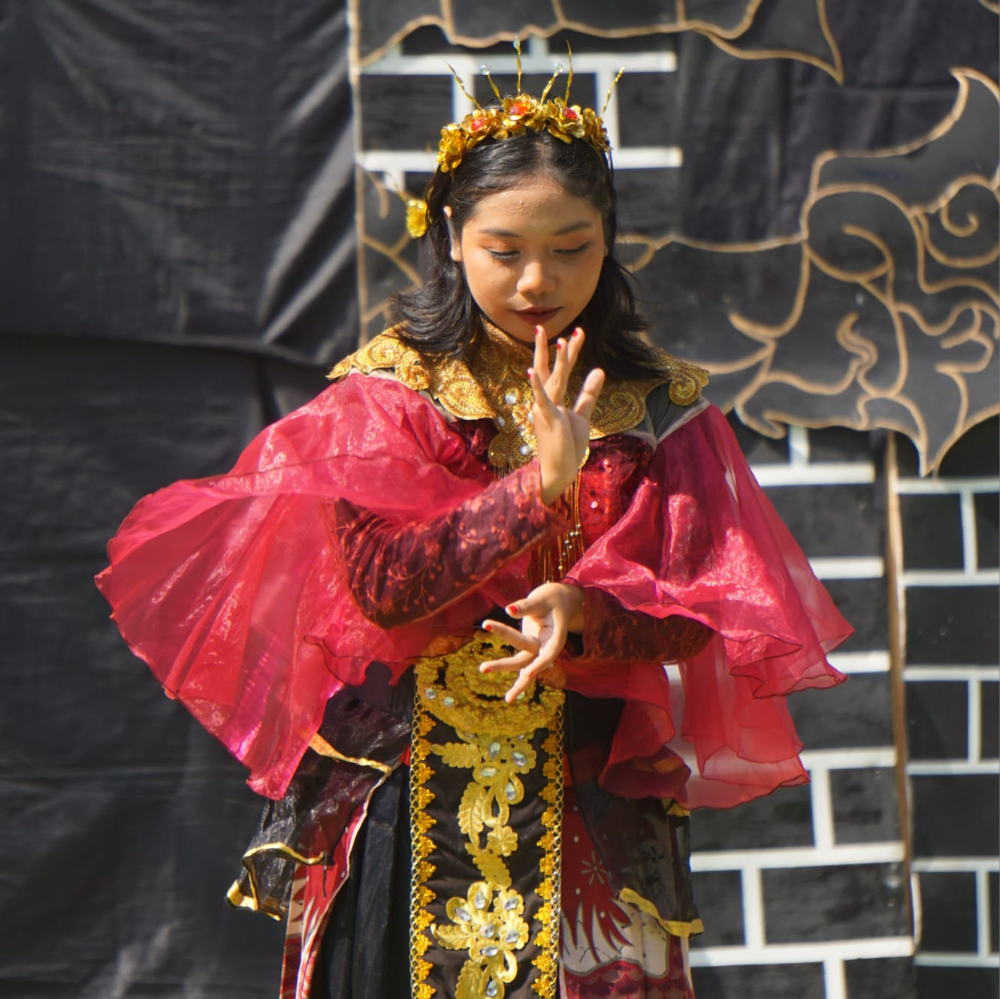

I first fell in love with dance when I was in elementary school. During junior high, I drifted away from it because the environment at my school didn't really give me the opportunity to keep dancing. Even so, my passion for dance never truly disappeared.
When I started high school, I made the decision to return to it, and it felt like coming home. Since then, dance has remained an important part of my life, and I’ve continued pursuing it throughout my college years.